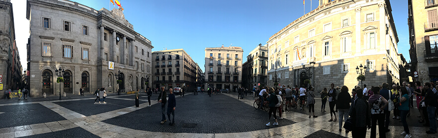
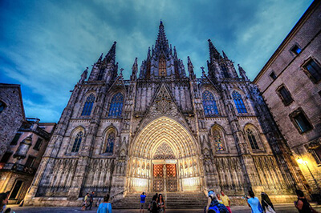
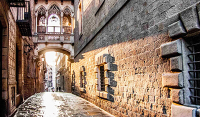
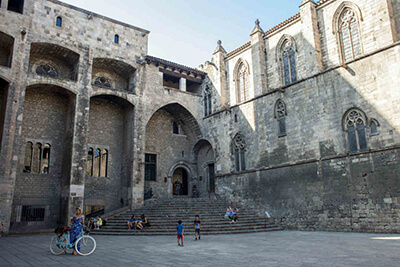
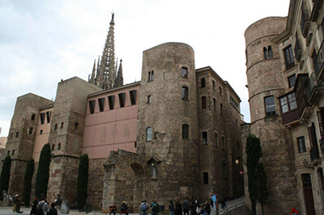
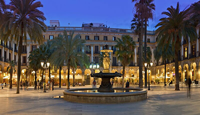
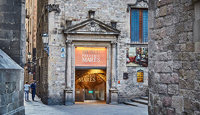

-
Plaza Sant Jaume
Es una de las principales, más antiguas y representativas plazas de la Ciudad Condal, con un gran valor historico. Ubicada en el centro de la misma, donde estaba el núcleo de la antigua Barcino; en ella se encuentra el Palacio de la Generalidad catalana y la sede del Ayuntamiento de Barcelona o Casa de la Ciudad
Volver al inicio -
Catedral de Santa Eulalia
También conocida como la SEU, es la catedral gótica de Barcelona, sede del Arzobispado de Barcelona, en Cataluña, España.
Se construyó durante los siglos XIII a XV sobre la antigua catedral románica, construida a su vez sobre una iglesia de la época visigoda a la que precedió una basílica paleocristiana, cuyos restos pueden verse en el subsuelo, en el Museo de Historia de la Ciudad. La finalización de la imponente fachada en el mismo estilo, sin embargo, es mucho más moderna (siglo XIX). El edificio es Bien de Interés Cultural y, desde el 2 de noviembre de 1929, Monumento Histórico-Artístico Nacional.
Volver al inicio -
Carrer del Bisbe
Agradable calle peatonal que une la Plaza Sant Jaume con la Catedral.
Es la única puerta que se conserva en la actualidad de las cuatro que se abrían en la muralla romana de Barcelona, España. Está situado a la embocadura de la calle del Obispo, frente a la Plaza Nueva, en el Barrio Gótico, en el distrito de Ciutat Vella. Con el resto de tramos de la muralla romana barcelonesa, forma parte de un conjunto catalogado como Bien de Interés Cultural.
Volver al inicio -
Plaza del Rey
Se trata de una plaza monumental, rodeada de edificios góticos y renacentistas, la mayor parte de los cuales forman parte del conjunto del Palacio Real Mayor, que fue la residencia y sede del gobierno de los condes de Barcelona y de los reyes de Aragón.
Los edificios más significativos del conjunto palaciego son El Tinell, sobre el que se levanta la torre conocida como Mirador del Rey Martín, la capilla de Santa Ágata y el palacio del Lloctinent. El edificio que cierra esta plaza rectangular es la Casa Padellás, que data del siglo xvi y que fue trasladada piedra a piedra desde su ubicación original, en la calle Mercaders.
Volver al inicio -
Plaza Nova
Abre ante la antigua Puerta Praetoria, una de las puertas de la ciudad romana En esta puerta comenzaba el decumanus, una de las calles principales, y confluían los dos acueductos que llevaban el agua a Barcino. Hoy en día se puede ver una reproducción de un fragmento del acueducto romano, construida en 1958.
Volver al inicio -
Plaza Real
Concebida como neoclasicista a mediados del siglo XIX sobre un tejido destruido de la ciudad, cuenta con la particularidad de que su ritmo clásico se subvierte, cambiando mínimamente los espacios entre pilastras, para dar la impresión de que la plaza es cuadrangular. El arquitecto también tuvo la sutileza de permitir la creación de pasajes para conectar las calles del tejido medieval que habían quedado cortadas por la plaza. Antoni Gaudí diseñó unas farolas para colocarlas en la plaza, donde destaca igualmente la Fuente de las Tres Gracias (1876), obra de Antoine Durenne.
Volver al inicio -
Museo Frederic Marès
Situado en una parte del antiguo Palacio de los Condes de Barcelona compone un singular espacio en el que se exponen las obras del coleccionista Frederic Marès. Inaugurado de forma oficial en 1948 e inicialmente constaba sólo de cuatro salas. Marès no abandonó su pasión por coleccionar y el edificio fue ampliándose con nuevas salas hasta 1970, año en el que el museo adquiere el volumen actual.
Volver al inicio